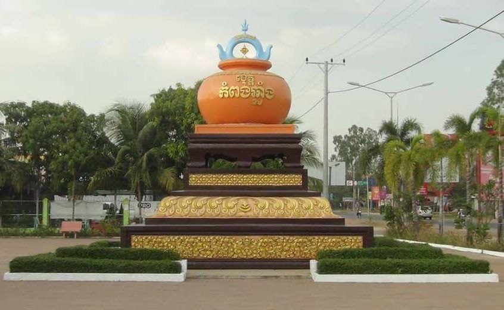

ការពិពណ៏នាអំពី ខេត្តនីមួយៗនៅក្នងប្រទេសកម្ពុជា
ទំព័រដើម
តាកែវ
ភ្នំពេញ
កែប
ព្រះសីហនុ
ស្វាយរៀង
កំពង់ធំ
បាត់ដំបង
ពោធ៏សាត់
សៀមរាប
រតនគីរី
មណ្ឌលគីរី
ក្រចេះ
ត្បូងឃ្មុំ
កំពងចាម
ព្រៃវែង
កណ្តាល
ឧត្តរមានជ័យ
កំពង់ឆ្នាំង
កំពង់ស្ពឺ
បន្ទាយមានជ័យ
កោះកុង
ប៉ៃលិន
កំពត
ស្ទឹងត្រែង
ព្រះវិហារ
ទំនាក់ទំនង
ខេត្តកំពង់ឆ្នាំង

ព័ត៌មានសង្ខេបអំពីខេត្តកំពង់ឆ្នាំង
> ខេត្តកំពង់ឆ្នាំង (អ.ស.អ.: [kɑmpɔːŋ cʰnaːŋ]) ជាខេត្តមួយ ស្ថិតនៅភាគកណ្តាលនៃប្រទេស កម្ពុជា។ ខេត្តកំពង់ឆ្នាំង ជាខេត្តល្បីខាងផលិតក្អមឆ្នាំងមានគុណភាពល្អ អំពីដី។ ខេត្តជិតខាងគឺ (ពីខាងជើងតាមទ្រនិចនាឡិកាវិល) កំពង់ធំ កំពង់ចាម កណ្ដាល កំពង់ស្ពឺ និង ពោធិ៍សាត់។ ក្រុងទីរួមខេត្តកំពង់ឆ្នាំងគឺក្រុងកំពង់ឆ្នាំង។
> ខេត្តកំពង់ឆ្នាំងស្ថិតនៅភាគកណ្ដាលប្រទេសកម្ពុជា។ ខេត្តកំពង់ឆ្នាំងមានព្រំប្រទល់ខាងជើងជាប់ខេត្តកំពង់ធំ ខាងកើតជាប់ខេត្តកំពង់ចាម ខាងត្បូងជាប់ខេត្តកំពង់ស្ពឺ និងខាងលិចជាប់ខេត្តពោធិ៍សាត់។ ខេត្តនេះស្ថិតនៅចម្ងាយប្រមាណ ៩១ គ.ម. ពីរាជធានីភ្នំពេញ។
> ខេត្តនេះត្រូវបានបែកចែកទៅជា ៨ ស្រុក-ក្រុង។ ស្រុកត្រូវបានបែងចែកបន្តទៅទៀតជា ៦៦ ឃុំ និង ៥៦៩ ភូមិ។ មានក្រុងមួយ ហើយនិង ៤ សង្កាត់។ ក៏មានអង្គការរដ្ឋបាលឃុំចំនួន ១០២។
> ខេត្តកំពង់ឆ្នាំងមានអាកាសធាតុក្ដៅហើយសើមដូចបណ្ដាខេត្តទូទាំងប្រទេសកម្ពុជាដទៃទៀតដែរ។ រដូវវស្សាចាប់ពីខែ ឧសភា ដល់ខែ តុលា (សីតុណ្ហភាពពី ២៧ ទៅ ៣៥អង្សា សំណើម ៩០ % ) រដូវរងារពីខែ វិច្ឆិកា ដល់ខែ មីនា (សីតុណ្ហភាពពី ១៨ ទៅ ២៨ អង្សា) និងរដូវក្ដៅពីខែ មីនា ដល់ ខែ ឧសភា (សីតុណ្ហភាពពី ២៨ ទៅ ៣៦ អង្សា)។
> ខេត្ត កំពង់ឆ្នាំង មានចំនួន ៧ ស្រុក និង ១ ក្រុង :
- ស្រុកបរិបូណ៌
- ស្រុកជលគីរី
- ស្រុកកំពង់លែង
- ស្រុកកំពង់ត្រឡាច
- ស្រុករលាប្អៀរ
- ស្រុកសាមគ្គីមានជ័យ
- ស្រុកទឹកផុស
- ក្រុងកំពង់ឆ្នាំង